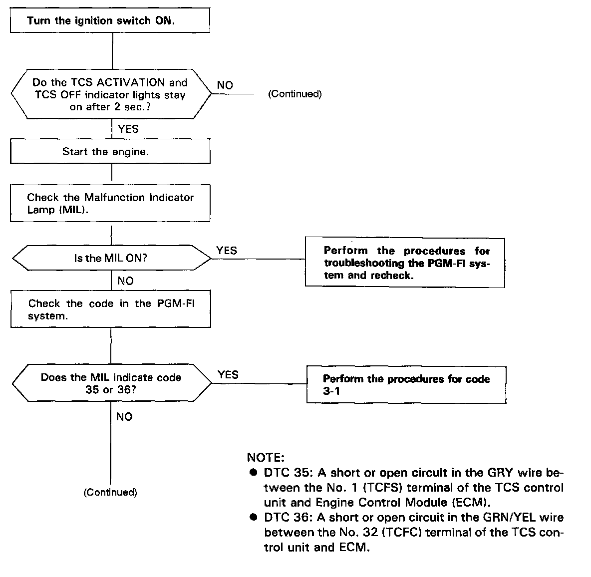
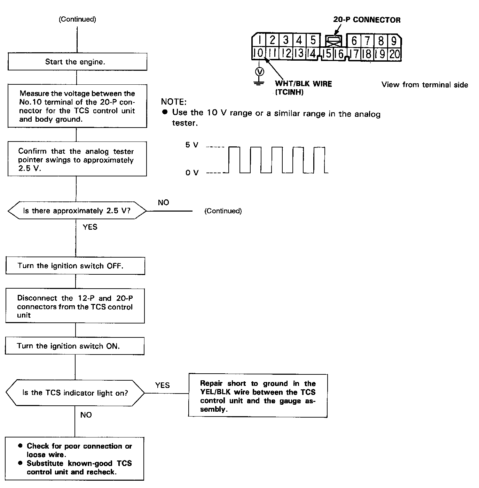
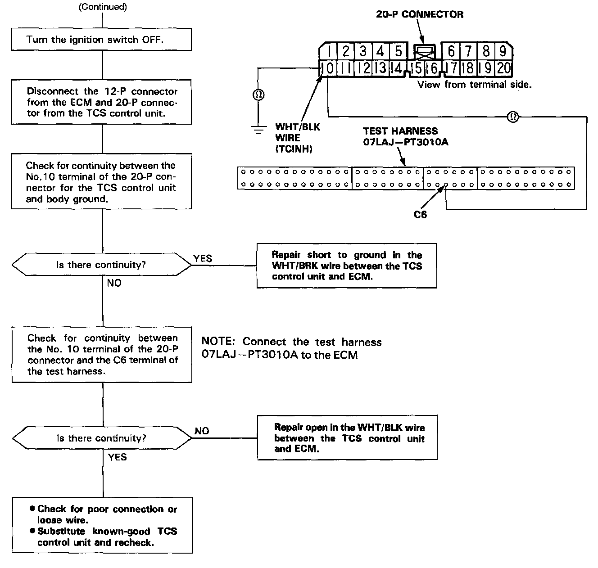

TCS Indicator Lamp Does Not Go Off After Engine Is Started



The TCS indicator light does not go off after the engine starts:
NOTE:
- First check for a Diagnostic Trouble Code (DTC), then, if necessary, go to the appropriate troubleshooting.
Displaying & Reading Trouble Codes
Traction Control System (TCS)
- When the engine starts, a TCS system check is performed. The TCS indicator light will go off if the system is normal.
- If the back-up power supply is less than 8V to the TCS control unit (No.35 terminal), the system check is stopped and TCS indicator light comes on.